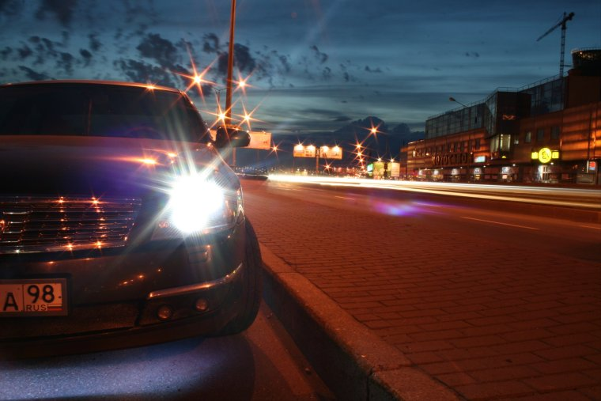
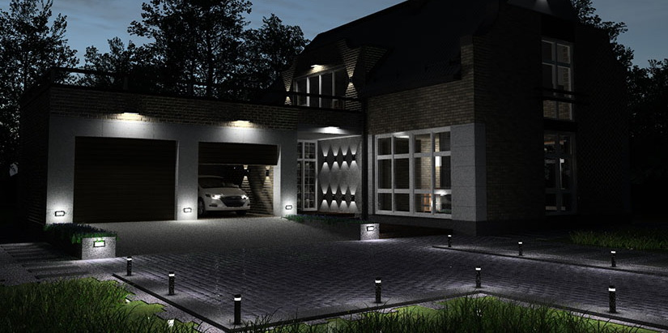

Я сидел и размышлял на тему "Что они там творят? Неужели руководство не видит очевидных вещей, как же можно или даже нужно. Нет - необходимо! Необходимо действовать в сложившейся рыночной обстановке". Я обычный клерк. А обычные клерки только и занимаются тем, что работают или думают на тему "Какие же руководители некомпетентные", когда работы нет. Напротив меня за соседним столом сидит Анна. Мы с ней знакомы не так давно, но быстро нашли общий язык. Кажется, что моя коллега поддержала бы меня в моих размышлениях, но у неё работа была. Грустно, когда нет работы и не с кем обсудить её отсутствие, если бы только...

Я разговаривал с Анной о том "Что они там творят? Неужели руководство не видит очевидных вещей. Можно же действовать адекватно в сложившейся ситуации". Анна быстро включилась в диалог и мы как всегда выстраиваем 100%-но победную стратегию организации. По одной стратегии на каждый мой рабочий день, неужели в мире существует столько способов достичь желаемого? Беда лишь в том, все стоящие мысли доходя до адресата, получают резолюцию - "дорого" или "невозможно". Вот если бы...

Я зашиваюсь. Я с самого утра впахиваю как проклятый и ухожу с закрытием проходной, Анна за соседним столом тоже ничего не видит в течение дня, кроме медленно ослепляющего монитора. Это бесконечно продолжается изо дня в день и сколько это происходит - столько мой кошелек не видит премии. Все это напоминает бесполезную беготню за обещаниями лучшей жизни. Но разочарования в этом нет... нет времени. Выхожу из здания морозный воздух сковывает легкие, а у меня одна мысль как я приду в свою съемную необставленную однушку и освобожу свою шею от корпоративной удавки. Мимо пешеходов с матовыми глазами, как и у меня, тороплюсь ничего не делать. Быстрее домой - ничего не делать. На остановку. Мимо проезжает авто бизнес класса. А если бы...
Уставший, в комфорте еду домой, если это можно назвать домом. Размышляю на тему "На кой хрен я позволил себе такую машину, если я живу в жопе мира и это выражение касается не только удаленности моего жилища от центра. Нет чтобы обставить квартиру". Успокаиваю себя мыслью, что это просто все мне не принадлежит, а значит не стоит там обживаться. Но тратить полторы штуки было все равно на мой взгляд не обдуманно на полностью симметричный номер авто, это же всего лишь цифры. Как поговаривают мои коллеги за спиной "Дешевый понт, который дорого мне обошелся". Было бы неплохо, чтобы мне было куда ехать на этой машине, ведь в ней комфортнее, чем в халупе, в которую я направляюсь. Если бы...
Из размышлений меня выдернул до боли странный образ, по встречке проехало авто с моими номерами, та же модель... по встречке проехала моя машина, смотрю в зеркало заднего вида... да нет, показалось наверное, по ходу я совсем заработался. Надо быстрее домой и отдохнуть, домработница уже должна была все подготовить: ужин, свежая постель. Это так удобно, жаль, что придется этого лишиться, дорабатывает она последний месяц, потому что на зарплату обычного клерка я не могу позволить себе содержать даже дом, а домработницу и подавно. Ума не приложу, что мне с этим всем делать. Нельзя наверное так думать, но мой отчим хоть что-то полезное сделал в жизни - умер, попортив столько крови, сведя мать в могилу. Хотя и этим он умудрился мне подпортить жизнь, удивительно, но как можно испортить жизнь оставив наследство? На работе меня стали открыто ненавидеть. Возможно это зависть, а может кто-то думает, что я учавствовал в досрочном приобретении наследства, я не знаю. Звоню Ане, забыл положить на отправку почту в главный офис. Не берет трубку. Еще раз. Еще раз. "Что ты хочешь?" Удивительно, как может измениться отношение конкретного человека из-за общего мнения. "Анечка, положи пожалуйста к почте на завтра договоры, что у меня лежат на столе справа от монитора". В ответ "Вообще то мой рабочий день уже давно закончен!". Повесила трубку. Интересно. Меня это злит, но интересно, когда это произошло, столько общего у нас было и вдруг совсем чужие.Филей в комфорте, а в голове "Как платить за коттедж, за машину, как решить проблемы на работе, если никто не идет на контакт". Если бы я был её начальником... и зарплата куда выше... Если бы только...

Подъезжаю к дому. Загоняю машину под навес. Выхожу, смотрю на дом. Застыл. Мать наверное гордилась бы мной. Еще нет 30, начальник, прилично устроенный, перспективный. Неплохо, неплохо. Поднимаюсь в гостиную, домработница подает ужин. Это все так странно. Нет, я ничего не хочу сказать, это приятно, но я не привык к такому. И хочу заметить, что этот стейк из лосося в этой тарелке чувствует себя куда лучше в сравнении со мной. Звонит Аня. Поднимаю. "Виктор Александрович, я прошу прощения, что беспокою так поздно, Вы оставили бумаги на столе, их нужно отправить заказчику?". Я утвердительно отвечаю и ложу трубку, несмотря на то, что Аня явно хотела задать еще пару вопросов. Все завтра. Надоели. Тяжелая работа всем отказывать. Постоянно какие-то глупые предложения сыпятся и при этом при всем никто не хочет свои непосредственные обязанности выполнять. И все думают, что они знают лучше. Абсолютно все знают лучше. А кто готов принять ответственность за эти решения. Отодвигаю тарелку. Нет совсем аппетита. От моих решений зависит будет ли у них работа завтра, а они ноют. Так спокойно было обычным клерком, искренние чувства вокруг, мать, так спокойно. Вот если бы...
Я сидел и размышлял на тему "Что они там творят?...
Все герои вымышлены, совпадения случайны